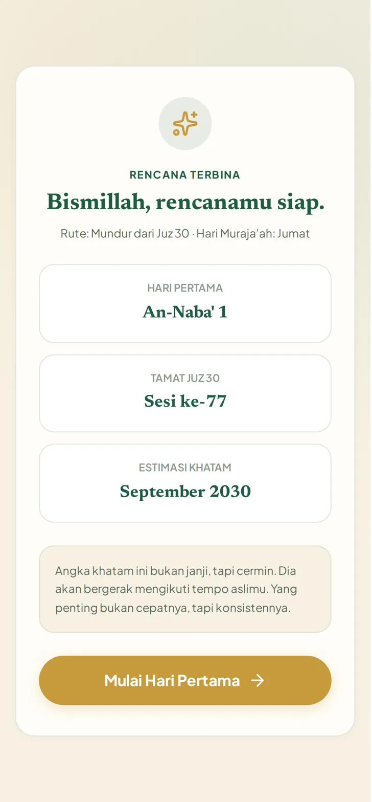
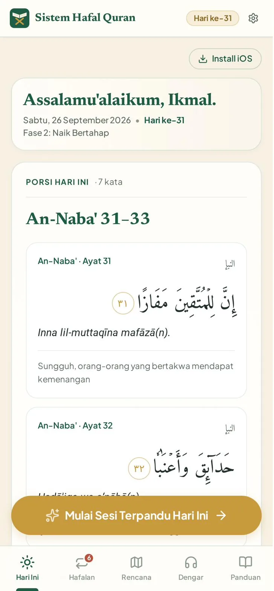
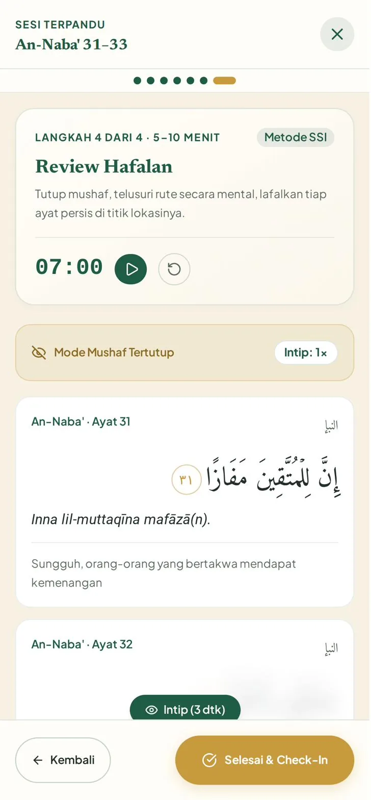
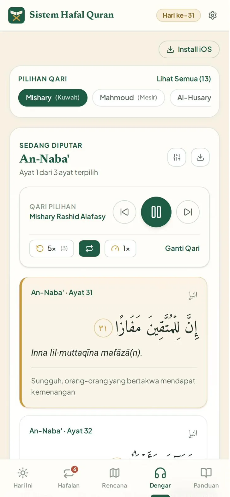
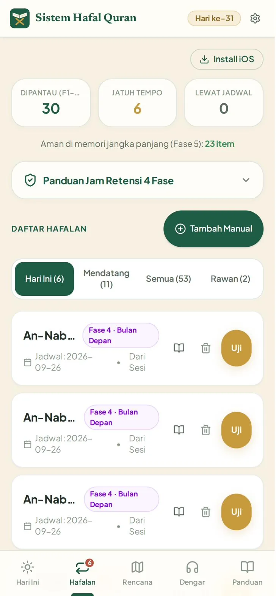
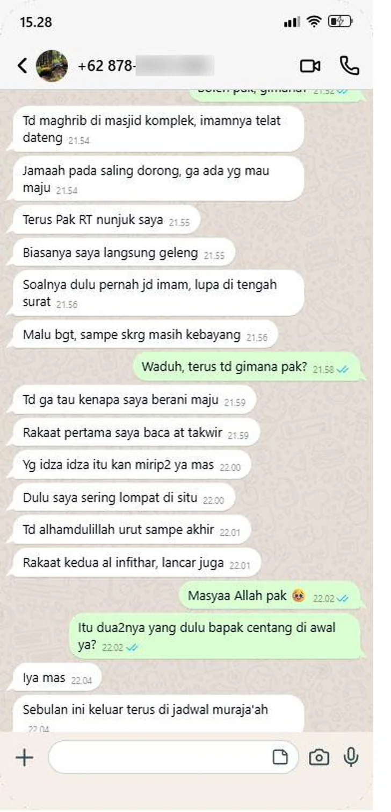
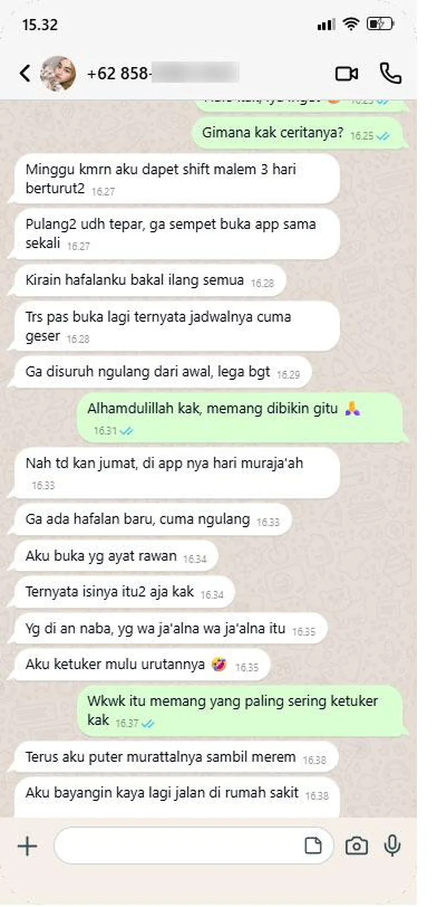
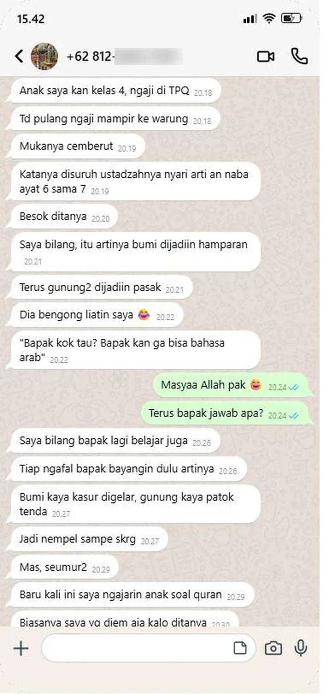
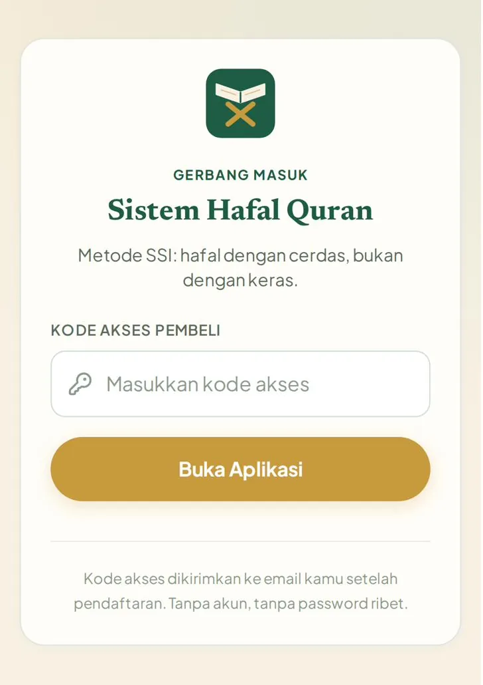

Otak orang dewasa gak menyimpan hafalan lewat pengulangan seperti anak kecil. Dia menyimpan lewat lokasi, makna, dan suara. Sistem Hafal Quran menyusun hafalanmu sampai 30 juz, memutar murattal ayat yang sedang kamu hafal, dan mengingatkan kapan tiap ayat harus diulang sebelum sempat lepas. Cukup 20 sampai 45 menit sehari.
Sekali bayar. Akses selamanya. Buka dari browser HP atau laptop, gak perlu download dari Play Store.
“Mas aja yang maju.”
Maghrib di masjid komplek, imamnya telat datang. Jamaah saling dorong, lalu ada yang nunjuk kamu. Kamu geleng. Sudah bertahun-tahun sholat, surah yang kamu hafal masih yang itu-itu saja, dan kamu takut lupa di tengah bacaan.
“Kemarin udah lancar.”
Satu ayat kamu ulang dua puluh kali sampai yakin nempel. Besok paginya, pas dicoba di sholat Subuh, ayat ketiganya hilang. Kamu mulai mikir, mungkin memang otakku sudah gak kuat hafalan.
“Bismillah, mulai lagi dari Al-Mulk.”
Ketiga kalinya tahun ini. Minggu pertama semangat, ayat 1 sampai 7 lancar. Lalu kerjaan numpuk, dua minggu gak nyentuh mushaf. Pas balik, ayat 1 sampai 7 ikut hilang, dan kamu mulai dari nol lagi.
Tiga adegan ini kelihatan beda. Akarnya satu. Dan bukan karena niatmu kurang, atau umurmu sudah lewat.
Selama ini caranya cuma satu: tambah ayat baru, ulang terus sampai lancar, lalu lanjut ke ayat berikutnya. Ayat yang kemarin gak pernah dijadwalkan untuk dikunjungi lagi. Persis ember bocor. Penuh sesaat, ditinggal semalam, kosong lagi.
Anak kecil memang bisa hafal cukup dengan diulang. Otak orang dewasa beda. Dia menyimpan lewat lokasi, makna, dan suara, lalu mengunci hafalan kalau diulang tepat sebelum lupa. Bukan seratus kali dalam semalam.
Sistem Hafal Quran mengerjakan dua hal itu untukmu: cara memasukkan ayat, dan kapan mengulangnya.
Tiap ayat ditaruh di satu titik di rumahmu, supaya urutannya gak ketuker.
Terjemahannya diringkas jadi satu kalimat, lalu jadi gambaran yang gampang diingat.
Murattal ayat yang sama diputar berulang, sampai nada dan tajwidnya ikut menempel.
Tiap ayat yang kamu hafal punya jadwal pulang: hari itu, besok, minggu depan, bulan depan, lalu muraja'ah rutin.
Review dulu, baru tambah.
Aturan emas yang dijaga aplikasinya setiap hari, supaya hafalan lama gak dikorbankan demi ayat baru.
Nama panggilan, mau mulai dari mana (mundur dari Juz 30, maju dari Juz 1, atau surah favorit dulu), surah yang sudah kamu hafal, hari muraja'ah, dan qari favorit. Keluar rencanamu: ayat hari pertama, kapan tamat Juz 30, dan perkiraan khatam.
Angka khatamnya bukan janji. Dia bergerak mengikuti tempo aslimu. Yang penting bukan cepatnya, tapi konsistennya.

Porsi hari ini sudah ada di layar pertama, lengkap dengan teks Arab, latin, dan terjemahannya. Tinggal putar murattalnya.
Kalau ada hafalan lama yang jatuh tempo, dia muncul duluan. Review dulu, baru tambah.

Tekan Mulai Sesi Terpandu, ikuti 4 langkahnya, lalu tutup dengan check-in jujur. Jadwal review ayat yang barusan kamu hafal langsung tersusun otomatis.
Sesi Terpandu
Sesi Terpandu menuntunmu lewat 4 langkah Metode SSI, masing-masing dengan timernya sendiri: dengarkan murattal, taruh ayat di satu titik di rumahmu, ringkas maknanya, lalu review dengan mushaf tertutup.
Di langkah terakhir, teks Arab disembunyikan. Lupa? Ketuk Intip, ayatnya terbuka 3 detik. Aplikasi mencatat berapa kali kamu intip, tanpa menghakimi.
Selesai sesi, kamu menilai dirimu sendiri dengan jujur: Tuntas, Setengah, atau Belum. Kalau belum, besok porsinya diulang dengan tenang. Gak ada yang hangus.

Dengar
Pilih dari 13 qari, di antaranya Mishary Rashid Alafasy, Mahmoud Khalil Al-Husary, Muhammad Siddiq Al-Minshawi, dan Abdurrahman As-Sudais. Putar per surah, per juz, atau langsung ayat yang sedang kamu hafal.
Tiap ayat bisa diulang 3 kali, 5 kali, 10 kali, atau terus. Kecepatannya bisa diperlambat, dan teks ayatnya tersorot mengikuti suara qari.
Mau pergi ke tempat yang susah sinyal? Simpan surahnya untuk offline dulu, murattalnya tetap bisa diputar.

Jam Retensi
Setiap ayat yang selesai kamu hafal langsung masuk Jam Retensi, dengan jadwal ulang yang makin jarang: hari itu, besok, minggu depan, bulan depan, lalu muraja'ah rutin.
Tiap hari kamu cukup buka daftar yang jatuh tempo, uji dengan mushaf tertutup, lalu pilih Lancar, Ragu, atau Lupa. Yang lancar jadwalnya naik. Yang lupa diulang besok.
Surah yang sudah kamu hafal dari dulu juga bisa dimasukkan, supaya ikut dijaga. Dan satu hari tiap minggu jadi Hari Muraja'ah: gak ada ayat baru, cuma mengunjungi hafalan lama.

menyiapkan porsi hafalan harianmu sampai 30 juz, memutar murattal ayat yang sedang kamu hafal, menuntun sesi hafalan dengan Metode SSI, dan mengingatkan kapan tiap ayat harus diulang.
guru, dan bukan pengganti setoran. Aplikasi ini tidak mendengar dan tidak mengoreksi bacaanmu. Penilaiannya datang dari dirimu sendiri, dengan jujur. Kalau kamu bisa setor ke ustadz, tetap setor. Aplikasi ini yang jaga hafalanmu di antara pertemuan.
| Hafal sendiri pakai mushaf | Playlist murattal YouTube | Sistem Hafal Quran | |
|---|---|---|---|
| Hari ini ngafal apa | Mikir sendiri | Cari sendiri | Porsi hari ini sudah disiapkan |
| Kapan muraja'ah | Kalau ingat | Tidak ada | Jadwal otomatis per ayat |
| Ulang satu ayat 5 kali | Baca manual | Geser-geser video | Satu tombol, per ayat |
| Di tempat tanpa sinyal | Bisa, tanpa suara qari | Butuh sinyal dan kuota | Surah yang disimpan tetap bisa diputar |
| Hafalan lama yang mulai lepas | Baru ketahuan pas lupa | Tidak dipantau | Ayat rawan ditandai |
| Tahu sudah sampai mana | Pakai ingatan | Pakai ingatan | Progres per juz dan perkiraan khatam |
| Arab, latin, terjemahan | Tergantung mushafnya | Kadang ada | Selalu ada, sumber Kemenag |
Geser untuk melihat cerita lainnya. Nomor disensor untuk menjaga privasi.



Rp127.000 untuk 90 hari pertama.Sekitar Rp1.400 per hari untuk tiga bulan pertama, dan setelah itu gak ada tagihan apa-apa lagi. Aplikasinya tetap nemenin sampai khatam.
Panduan Akses berisi kode masuk dikirim ke email yang kamu pakai saat order.
Bisa pakai QRIS, transfer bank, atau e-wallet.
Begitu pembayaran terkonfirmasi, kamu diarahkan ke halaman sukses, dan Panduan Akses berisi kode masuk dikirim ke email kamu. Kalau belum ada di kotak masuk, cek folder Spam atau Promosi.
Buka shqapp.netlify.app, masukkan kode dari email, lalu isi rencanamu sekitar 2 menit. Hari pertama bisa langsung dimulai malam ini.

Kamu sudah coba menghafal sendiri. Sudah coba ulang sampai berbusa. Dua minggu kemudian, semuanya lepas lagi.
Bukan karena umurmu. Karena selama ini hafalanmu gak pernah punya jadwal pulang.
Hari pertamamu cuma satu ayat.
Sekali bayar. Akses selamanya. Buka dari browser HP atau laptop, gak perlu download dari Play Store.